|
|
2013: Crescendo |
|
Nosso blog de final de ano de 2013 também está disponível em Inglês. Edições anteriores são encontradas aqui.
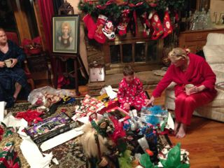 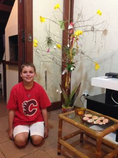 Tradições são importantes. Portanto, apesar de eu estar agora sentado na área de uma casa alugada na frente da bonita Baia Norte na ilha mágica de Santa Catarina no Brasil neste dia antes do Natal, nós ainda vamos tentar escrever este blog de final de ano. Nós também coletamos um galho seco na praia e vamos decorá-lo com conchinhas e flores para servir como nossa árvore de Natal. E mesmo que as bolachinhas sejam compradas no supermercado, nós vamos decorá-las e deixá-las junto `a árvore e também deixar pedaços de cenoura para as renas na expectativa da chegada do Papai Noel. Você vai receber esta mensagem mais tarde porque uma das dádivas deste lindo lugar é que ele não tem conexão `a internet e permite que nós tenhamos uma folga da nossa vida sempre conectada.
Este é um grande contraste com o nosso Natal de 2012 que nós passamos de maneira muito tranquila com o Vovô e a Vovó Meadows na sua bonita casa decorada em Oklahoma. Nos dias depois do Natal lá o Daniel teve muito tempo para brincar com os primos dele. Aqui no Brasil as brincadeiras dele são nadar e jogar futebol na praia com crianças e jovens que não falam inglês.
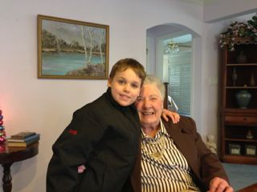 Um dos encontros mais importantes para o Daniel toda a vez que nós fomos para Oklahoma era ir ver a "Great". Esta é a maneira que ele chamava a bisavó Meadows. De acordo com o Daniel ele chamava ela de "Great" porque ela era a "GreatGrandma" dele e também porque ela era "great" ou "o máximo". Eles sempre estavam muito felizes juntos e o Daniel sempre diminua o seu ritmo sempre muito acelerado para falar com ela. Infelizmente a Great faleceu em 2013 e deixou muita saudade.
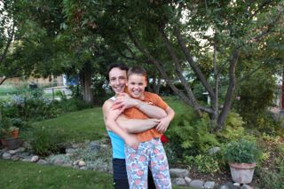 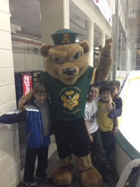 Seguindo a tradição, em Janeiro nós tivemos nossa festa de Natal-depois-do-Natal quando nós retornamos para casa e as atividades de inverno foram dominadas por treinos e jogos de hockey, construção de fortes de neve no pátio da escola, e jogos de hockey de assoalho no nosso porão. Nós também tivemos várias jantares de "noite de estudantes" na nossa casa com muitos dos alunos de graduação que estavam em Edmonton com o programa Ciências sem Fronteira. Cada jantar de dia de semana era seguido de um jogo de "hockey de joelho" coordenado pelo Daniel. Nós nos tornamos amigos de vários estudantes, mas Daniel ficou mais próximo da Renata, do Serafim, e de uma maneira muito especial do Luckas que brincou com ele até o retorno dele para o Brasil no verão.
Nós também assistimos muitos jogos do Golden Bears na Universidade de Alberta e até um jogo dos Panda Bears (o time feminino de hockey da universidade). O Daniel se divertiu mais quando nós convidamos alguns dos seus amigos mais próximos para virem para o jogo conosco.
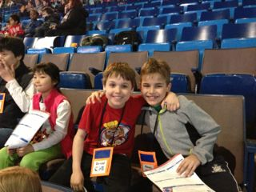 Em Fevereiro, a turma do terceiro ano do Daniel teve "escola no gelo" --- uma semana inteira de aulas no estádio de hockey do Oilers de Edmonton. Na quarta-feira eu fui um dos pais voluntários e neste dia o time do Oil Kings teve um jogo de hockey amistoso para mais de 6000 crianças de várias escolas de Edmonton. Esta é uma destas coisas que ocorre "somente no Canada" onde um jogo de hockey é uma atividade legítima para um dia de aula na escola primária.
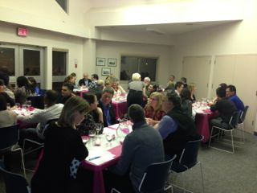 Em Fevereiro nós também lideramos a organização de um evento beneficiente de prova de vinhos para a escola do Daniel. Eu cozinhei a maior parte da comida e o Scott foi responsável pela combinação da comida com os vinhos. Nós vendemos mais de 60 ingressos para aquela noite e tivemos um dos eventos beneficientes de maior sucesso para a escola. Nós recebemos comentários muito positivos tanto pela comida como pela qualidade das combinações de comida com vinhos.
No início das pequenas férias de primavera eu viajei com o Daniel para Dallas e deixei ele com os avós em Oklahoma. De lá eu fui para o Brasil onde eu passei umas três semanas na Unicamp em Campinas trabalhando em uma colaboração muito frutífera com colegas lá. Minha estada no Brasil permitiu uma rápida visita a Porto Alegre para rever amigos e passar a Páscoa com minha mãe, visitar meus amigos, e . Do Brasil eu fui para a Alemanha para o meu primeiro workshop em Daghstul. Foi uma excelente experiência passar uma semana num local com um grupo de colegas com conhecimento na mesma área. O lugar em Daghstul também é muito bom e leva a boas interações. Depois eu passei uma semana em Praga para uma outra conferência e finalmente retornei a Edmonton depois de cinco semanas fora. Durante este período os avós voaram para Edmonton com o Daniel e passaram algum tempo com ele e o Scott lá. Depois de cinco semanas na estrada comendo "comida de evento" eu tinha ganhado um pouco de peso e decidi repensar a minha dieta. Como consequencia eu perdi peso visivelmente e teve muitas pessoas perguntando se eu emagreci de propósito. Sim é de propósito.
Durante a primavera e continuando no verão eu me envolvi em um projeto de pesquisa interessante que eventualmente foi chamado Nohomophobes 2.0. Um projeto já existente chamado Nohomophobes conta quantas vezes as expressões "faggot", "dyke", "No homo", e "So gay" são usadas no tweeter. Nosso projeto faz uma enquete pedindo a pessoas que classifiquem cada tweet como pejorativo ou não pejorativo. Nós esperamos usar técnicas de aprendizado de máquina para treinar modelos que irão permitir que nós façamos esta classificação automaticamente. Nós continuamos procurando por voluntários para nos ajudar a classificar tweets.
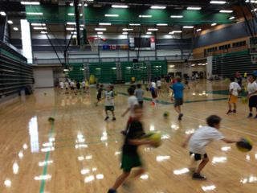 Em Maio e Junho nós estivemos muito ocupados com futebol no bairro e algumas viagens para mim --- para Toronto e Seattle desta vez. Julho e Agosto foram os meses de colônias de férias com muitos tipos de esportes incluindo hockey, golfe, futebol, basquete, curling, e natação. Eu fui a Lyon na Fran\ça para para um excelente pequeno workshop e tive a oportunidade de provar o que é considerada uma das melhores culinárias da França e também tive a chance de conviver com colegas queridos.
Para o dia dos pais, em Junho, nossa família apareceu em uma matéria no jornal de Edmonton que tinha o objetivo de discutir como as crianças em famílias não tradicionais lidam com o dia das mães e o dia dos pais. Nós recebemos muitos comentários positivos por termos permitido acesso da imprensa `a nossa cara para a matéria.
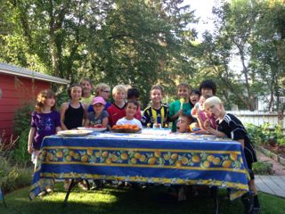 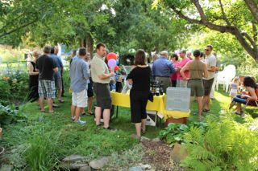 O ponto aldo do nosso mês de agosto foi nossa festa de verão no nosso quintal em torno do aninversário do Daniel. Mais uma vez tivemos um evento com muito sucesso. O Scott agora tem vários conhecidos na área de vendas de vinhos e portanto este ano muitos dos nossos convidados vieram destes círculos. A seleção de vinhos foi muito superior em comparação com os anos anteriores, e tanto a festa das crianças como a festa dos adultos foram grandes eventos. Mais uma vez nós fomos premiados com um bom tempo com a chuva as chegando apenas alguns minutos depois do último convidado ter partido.
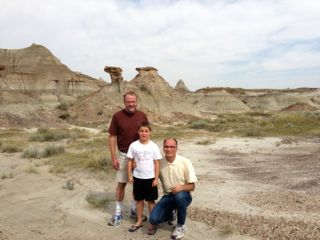 Depois das nossas comemorações de verão nós tiramos alguns dias em Drumheller, um dos melhores lugares do mundo para ver fosseis de dinosauro. O Daniel adorou a visita ao museu Royal Tyrell com a vovó e o vovô e nós também tiemos uma visita para as "badlands" que é a área onde muitos fossis de dinosauros ainda são escaados e onde se pode ver exemplos educacionais de como as escavações eram feitas antigamente e como são feitas hoje.
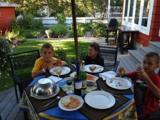 Alguns dos melhores momentos do verão foi quando os melhores amigos do Daniel, Dennis e Sinan, vinham brincar e ficavam para o jantar. O Daniel se divertiu muito sendo o anfitrião de seus amigos para jantares na área no nosso quintal.
Este ano de novo eu estava ensinando tres cursos no Outono na universidade e portanto o período de Setembro a Dezembro foi um turbilhão de atividades com muitas madrugadas muito cedo para dar conta de tudo que eu tinha que fazer. Conhecer excelentes alunos nos meus cursos e seguir o progresso deles pelo sue treinamento é um dos maiores benefícios de tanto trabalho. Ir para Edinburgh na Escócia para uma conferência no início de Setembro deixou o semestre ainda mais ocupado.
Durante a semana de Thanksgiving Canadense em Outubro eu recebi o meu colega Guido Araújo da Unicamp para uma visita acadêmica e nós também estivemos muito feliz por receber a visita de nossa amiga Fran Moore de Brisbane na Austrália durante a mesma semana. Foi muito divertido receber amigos que moram em locais tão distantes do globo em casa ao mesmo tempo e nós também tivemos muitas oportunidades para conversar com a Fran enquanto ela estava em Edmonton.
O Daniel continua sofrendo academicamente na escola e nós continuamos fazendo um trabalho significativo em casa com o que nós chamamos "Escola em Casa" nos finais de semana para ajudá-lo a continuar a fazer progresso no seu aprendizado. Ele também as vezes faz algumas decis~oes infelizes na maneir acomo ele se relaciona com os amigos. A diretora da escola tem o meu número programado no telefone dela e eu sou um dos visitantes mais frequentes do escritório dela. Mas nós temos uma excelente relação e juntos tentamos fazer o melhor para ajudá-lo em todos os aspectos do seu crescimento.
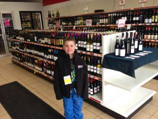 A loja de vinhos e licores do Scott, Ashton's Liquor, está indo muito bem. Ele desenvolveu relações importantes com vários representantes de vinhos e liores em Edmonton e também começou a fornecer para alguns restaurantes. A loja viu um acréscimo de vendas e, para satisfação do Scott, ele começou a ver clientes que estão mais interessados em produtos melhores aparecendo na loja. Ele também tem um novo parceiro na loja e com isto tem menos pressão em termos de organizer empregados, fazer ordens, etc.
É muito mais difícil encontrar tempo para compor um blog quando se está em um belo local na frente de uma praia do que dentro de uma casa num lugar frio. Eu comecei este blog na noite de Natal, e agora estamos quase no ano novo. Os dias aqui foram incrivelmente relaxantes. Deixando trabalho de lado e ficando desconectado permitiu que nós tivéssemos longas conversas com a família, que eu passasse muito tempo com o Daniel, e também que eu cozinhace com ingredientes locais. Eu espeo que você também tenha tido feriados de final de ano muito relaxantes.
Aqui para um grande 2014!
Nelson, Scott & Daniel{kind=link}
{kind=link}
{kind=link}
{kind=link}
{kind=link}
{kind=link}
{kind=link}
{kind=link}
{kind=link}
{kind=link}
{kind=link}
{kind=link}
{kind=link}
{kind=link}
{kind=link}